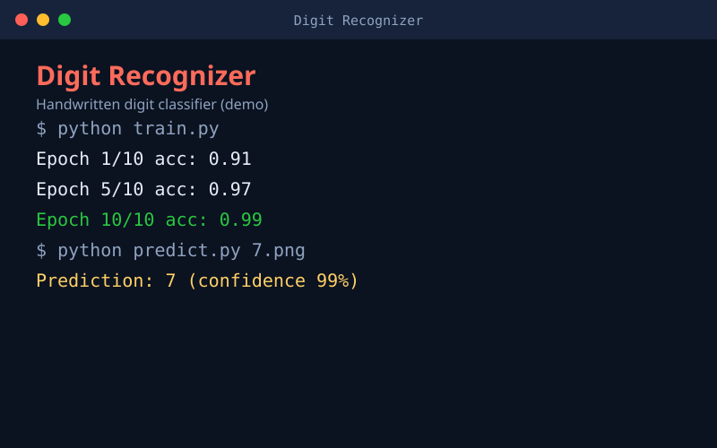

AI / Machine Learning
Digit Recognizer
A machine-learning project that learns to recognise handwritten digits (0 to 9) from images. It is trained on example digits, then predicts the number in a new image along with a confidence score.